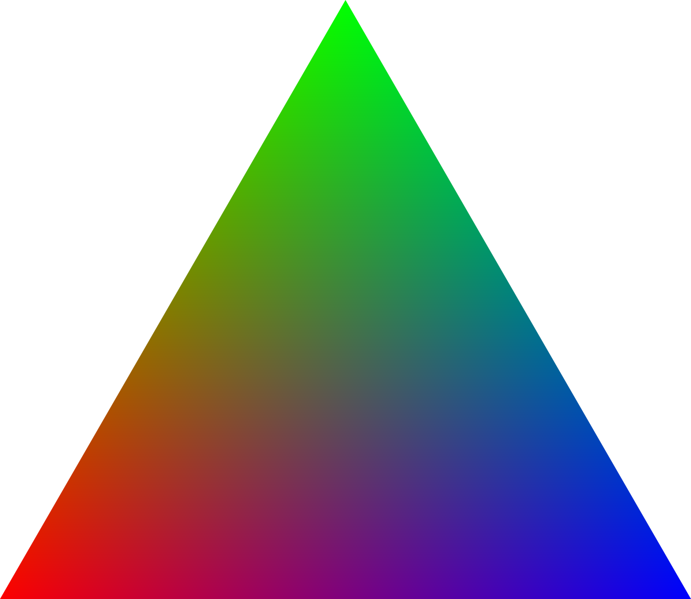
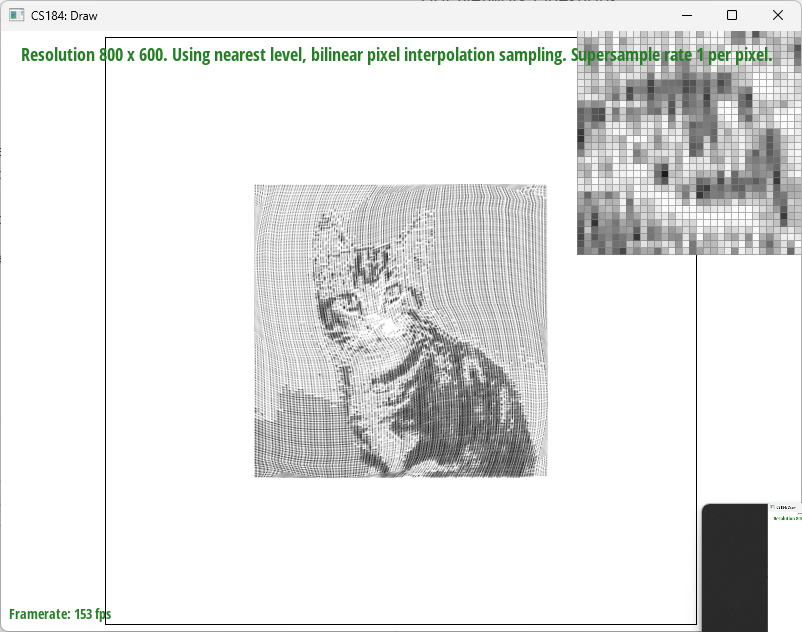

This homework gave me an understanding of how a scene is rendered in computer graphics. Before this course, I did
not know graphics used triangles as a base block to render a scene.
We have learned the basics of how graphics and texture are rendered to a scene, such as the three line test,
supersampling, translations, and texture mapping. In a way, we have provided a user
a procedural way to define 2d computer graphics componenets in a svg file, and our program will render it. Also,
the homework made us think about optimizations, and the best way to sample points while
taking up the least amount of time and space.
The first step of the algorithm is calculating the bounding box of the triaingle. We can calculate this through
taking the ceiling and the floor
of the maximum and the minimum of the triangle coordinates (x0, x1, x2). Since the triangle we are trying to
sample is small, we would not need to sample the whole
width and height of the screen. The code for calculating the bounding box is as follows:
The second step will be to sample all the points within our bounding box and determine if the point lies inside or
outside the triangle. We do this by creating vectors of the edges of triangles
where points a, b, c are the points of the triangle. The points of the triangle can be oriented clockwise or
counterclockwise. We calculate a orthogonal vector to each of the lines: (-y, x, 0) and
Do three line tests for each sample coordinate. We take a dot product of the orthogonal line vector with the
candidate minus the starting point of the line vector. The sample vec will be (i + 0.5, j+ 0.5) where we loop
over i and j within the bounding box.
We either check if the dot products are all positive or negative. If the normal vectors are pointing outside the
triangle, we would expect the dot product to be all negative. If the normal vectors are pointing
inside the triangle, then the dot products should all be positive. Therefore, we don't need to check if the
orientation of points are clockwise or countercockwise. We just check if the sings of all the dot products
are positive or negative.
Overview
Give a high-level overview of what you implemented in this homework Think about what you've built as a whole.
Share your thoughts on what interesting things you've learned from completing the homework.
Section I: Rasterization
Part 1: Rasterizing single-color triangles
The first step of the algorithm is calculating the bounding box of the triaingle. We can calculate this through
taking the ceiling and the floor
of the maximum and the minimum of the triangle coordinates (x0, x1, x2). Since the triangle we are trying to
sample is small, we would not need to sample the whole
width and height of the screen. The code for calculating the bounding box is as follows:
int max_x = (int)ceil(max({x0, x1, x2}));
int min_x = (int)floor(min({x0, x1, x2}));
int max_y = (int)ceil(max({y0, y1, y2}));
int min_y = (int)floor(min({y0, y1, y2}));
The second step will be to sample all the points within our bounding box and determine if the point lies inside or
outside the triangle. We do this by creating vectors of the edges of triangles
Vector3D line1 = a-b,
Vector3D line2 = b-c,
Vector3D line3 = c-a,
where points a, b, c are the points of the triangle. The points of the triangle can be oriented clockwise or
counterclockwise. We calculate a orthogonal vector to each of the lines: (-y, x, 0) and
Do three line tests for each sample coordinate. We take a dot product of the orthogonal line vector with the
candidate minus the starting point of the line vector. The sample vec will be (i + 0.5, j+ 0.5) where we loop
over i and j within the bounding box.
dot(sample_vec - b, line1norm)
dot(sample_vec - c, line2norm)
dot(sample_vec - a, line3norm)
We either check if the dot products are all positive or negative. If the normal vectors are pointing outside the
triangle, we would expect the dot product to be all negative. If the normal vectors are pointing
inside the triangle, then the dot products should all be positive. Therefore, we don't need to check if the
orientation of points are clockwise or countercockwise. We just check if the sings of all the dot products
are positive or negative.
My code uses a double for loop to check all the pixels within the bounding box, and assuming arithmetic can be
done
in constant time, sample point triangle check will not add to the complexity of the algorithm.
Therefore, my algorithm is no worse than the one that checks each sample within the bounding box of the triangle.
|
Image of basic/test4.svg.
|
Part 2: Antialiasing triangles
Supersampling removes the effects of aliasing by increasing the sampling rate frequency. We first supersample by
sampling multiple points within the pixel, and then downsample
by averaging all the sampled values within a pixel. Supersampling is useful since it can remove aliasing effects
such as jaggies and isolated pixelated edges by applying a pixel sized
filter box, which helps filter out high frequencies.
The algorithm and data structures used for supersampling are as follows. Since we need to have the space to
store
all the samples, the size of the sample_buffer is always width*height*sample_rate.
When we are looping around the sample points of the bounding box, and if we determine if a certain pixel is
inside
the triangle, we have to sample this sqrt(sample_rate) times both vertically and horizontally.
Using a double for loop (x, y), we iterate through the horizontal and vertical sampling rates. To ensure the
pixel
falls inside the middle of the sample we use the equation:
sample_x = i + x/sqrt_sample_rate + 1/(2*sqrt_sample_rate)
sample_y = i + y/sqrt_sample_rate + 1/(2*sqrt_sample_rate)
Simplifying this equation:
sample_x = i + (2*x+1)/(2*sqrt_sample_rate)
sample_y = i + (2*y+1)/(2*sqrt_sample_rate)
We can store the color of the triangle to the sample buffer, accounting for the sample dimention added in
sample_buffer[(i * sqrt_sample_rate + y) * (width * sqrt_sample_rate) + (j * sqrt_sample_rate + x)] = color;
There are further changes to the pipeline. When we draw the line, we have to make sure that the whole pixel is
colored with the assigned color.
Hence, we looped through the sample_rate in the fill_pixel function in order to fill the pixel values with the
correct color.
Finally, in the resolve_to_framebuffer function, we simply averaged out the color value by looping through the
sample_rate, and assigned rgb_framebuffer_target
an average color of a particular pixel.
By using this method, we could get rid of triangles' isolated pixels and jaggies by trading off runtime complexity
and space.
|
Sample Rate 1
|
Sample Rate 4
|
|
Sample Rate 8
|
Sample Rate 16
|
As I described previously, by supersampling, we are increasing the sample rate and downsampling which filters out
the high frequencies in our image. Therefore, we can see a smoother triangle edge
as the white and triangle pixels average out.
Part 3: Transforms
I tried to make the robot do a yoga pose, more specificaly, the Warrior II pose.
I have rotated the right leg -30 degress and rotated the bottom half of the right leg by 50 degrees for the robot
to
put pressure on his right knee.
I had to adjust the translation of the bottom knee (set x translation to zero) as the knee was already rotated
outwards.
Then, I rotated the left leg by 40 degrees just so he was spreading the legs.
Section II: Sampling
Part 4: Barycentric coordinates
|

Triangle Rendered with Barycentric Coordinates
|
Barycentric coordinates are used to add texture to a scene. Since we are using triangles to render shapes,
we need to figure out where the sample is in relation to the three points that define a triangle that may be
assigned
different texture values.
In my code, I use alpha, bravo, charlie to represent the weights associated with the three edges of the triangle.
alpha + bravo + charlie = 1
candidate_point = alpha*a + bravo*b + charlie*c
To calculate the weights, we take the ratio of the dot product of the sample point and the tangent vector to the
opposite line
and the dot product of the initial point (a, b, c) and the tangent vector to the opposite line.
We only have to calculate alpha and bravo since charlie will just be 1-alpha-bravo
alpha = dot(line2norm, sample_vec-c)/dot(line2norm, a-c);
bravo = dot(line3norm, sample_vec-a)/dot(line3norm, b-a);
charlie = 1 - alpha - bravo;
Barycentric coordinates can be used to map a point within a triangle with other data such as texture.
By calculating the barycentic coordinates for all samples, we can find the linear combination of the three
coordinate points (a, b, c) that makes up
each candidate point. As the points form a linear combination, we can compute the average color combination of
these three coordinates based on
the distance of the sample point to a, b, and c. The result is a triangle with smooth color transitions from red
(bottom left), blue (bottom right), and green (top)
Part 5: "Pixel sampling" for texture mapping
Pixel sampling refers to the set of techniques used to select the value of a pixel/subpixel to best represent
some underlying image or data. In our case we are using two different techniques to select a color value based
on
a backing texture map(Nearest neighbor, and Bilinear filtering). We perform our sampling using a uv coordinate
obtained by linearly interpolating the uv values betweeen the corners of a triangle. These uv coordinates then
are
mapped to a color either by the closest pixel on the uv map or a weighted average obtained through bilinear
interpolation.
|
Nearest Neighbor with 1 subsample
|
Bilinear Interpolation with 1 subsample
|
|
Nearest Neighbor with 16 subsample
|
Bilinear Interpolation with 16 subsample
|
Images of texmap/test1.svg.
With only one subsample it is visually clear that the line's intensity varies and is quite jagged when only using
Nearest Neighbor. The difference between the two sampling methods is significantly less albeit still noticable
when
they both have 16 subsamples per pixel. This is the case because at higher samples per pixel the averaging which
bilinear interpolation carries out is approximated by the averaging of the subsampled pixels. The largest
difference
between the two methods is shown when there are high frequency changes in color (such as the thin line shown in
the
example). This is because the effective sampling frequency is insufficient relative to the frequency of the source
signal.
Part 6: "Level sampling" with mipmaps for texture mapping
Level sampling is a technique to decrease the effective frequency of the source signal by having denoised and
down sampled versions of the original signal. This allows the renderer to dynamically select differing levels of
quality depending on the effective sampling rate relative to the original texture. This allows reduction of the
problem with high frequency data being not fully presented by having an averaged source of lower detail which
better represents the data and reduces the static and moire effects experienced.
Pixel sampling and the number of samples per pixel ultimately boil down to filtering through additional samples.
The difference being that in pixel sampling the filtering is performed before the sample is taken. This results
in
a visually smoother result especially in regards to jaggies but can come with runtime overheads for calculating
the smoothing for each sample rather than each group of samples. On the other hand pixel sampling allows for a
lower memory overhead due to not needing to store all of the subsamples it is trying to handle after that
specific
sample is calculated. Level sampling on the other hand, is much less capable at taking care of boundary
artifacts
like jaggies but can much better handle things like moire effects among others. This is all done with minimal
speed and memory overhead due to them being precomputed and the geometric nature of the size of mip maps.
|
L_ZERO, P_NEAREST
|
L_ZERO, P_LINEAR
|
|
L_NEAREST, P_NEAREST
|

L_NEAREST, P_LINEAR
|
Images of texmap/cat.svg.
Section III: Art Competition
If you are not participating in the optional art competition, don't worry about this section!
Part 7: Draw something interesting!